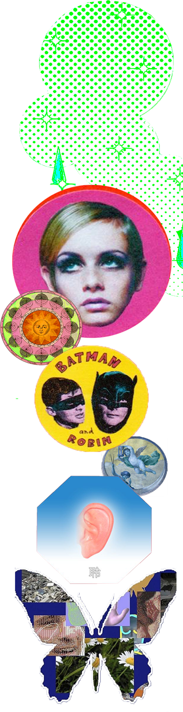
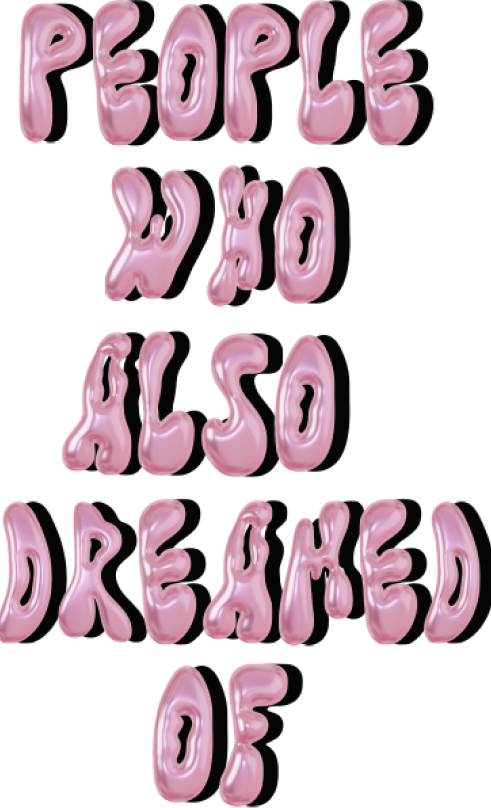
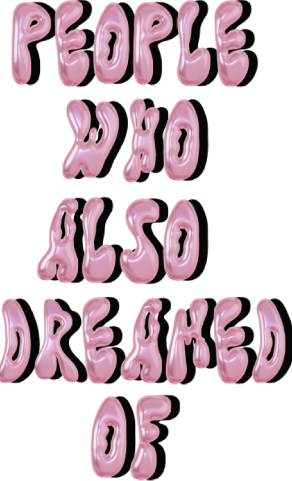

《周公解梦》，是根据人的梦来卜吉凶的一本解梦书籍，它对人的七类梦境进行解述。"The Interpretation of Dreams by Zhou Gong" is a book of dream interpretation that predicts good or bad luck based on people's dreams. It interprets seven types of dreams. 《周公解梦》，是根据人的梦来卜吉凶的一本解梦书籍，它对人的七类梦境进行解述。"The Interpretation of Dreams by Zhou Gong" is a book of dream interpretation that predicts good or bad luck based on people's dreams. It interprets seven types of dreams.《周公解梦》，是根据人的梦来卜吉凶的一本解梦书籍，它对人的七类梦境进行解述。"The Interpretation of Dreams by Zhou Gong" is a book of dream interpretation that predicts good or bad luck based on people's dreams. It interprets seven types of dreams.
Your dream suggests that you are navigating a challenging and competitive environment where you will face both familiar and unusual obstacles, symbolized by the black bear, bird-man, and half-fish person. These challenges may require you to confront powerful, intellectual, or unconventional adversaries. Despite your efforts to strategically position yourself for success, as represented by climbing to the rooftop, an unexpected and underestimated opponent—symbolized by the cat smoking a cigar—may arise, leading to an unforeseen setback or defeat. This dream warns you to stay vigilant and not to underestimate those who may seem less threatening, as they could pose significant challenges in your journey toward success.

Unexpected Challenges & Encounters:
Section 25 (龙蛇, 禽兽, 等类 - Dragons, Snakes, Birds, and Beasts): The presence of non-human characters like the black bear, bird-man, and half-fish person in your dream reflects the unexpected and strange challenges you may face. These unusual creatures symbolize encounters with odd or unfamiliar situations in the future, where you must navigate through bizarre or difficult circumstances.
Power Struggles & Conflict:
Section 20 (杀害, 斗伤, 打骂 - Killing, Fighting, Beating): The act of shooting and the competitive environment of the game represent power struggles or conflicts in your waking life. Being the second last survivor signifies a near-victory, but ultimately, you face a final challenge, symbolized by the cat smoking a cigar. The struggle suggests upcoming challenges where you’ll face strong or cunning opponents.
Unexpected Betrayal or Sudden Defeat:
Section 26 (牛马, 猪羊, 六畜 - Cattle, Pigs, Sheep, and Domestic Animals): The final encounter with the cat, which unexpectedly shoots you, can be tied to the symbolism of domestic animals. A cat smoking a cigar represents an unexpected betrayal or sudden defeat, where someone or something seemingly harmless may turn out to be a significant challenge. This suggests caution in underestimating situations or people who appear non-threatening.
Themes of Survival & Isolation:
Section 27 (龟鳖, 鱼虾, 昆虫 - Turtles, Fish, Shrimp, Insects): The desolate desert setting and the survival game atmosphere echo the isolation and survival themes present in this section. The half-fish person struggling to survive in the desert symbolizes difficulties in adapting to environments or situations where one feels out of place. This could reflect a future scenario where you feel isolated or out of your element, struggling to thrive.


 
